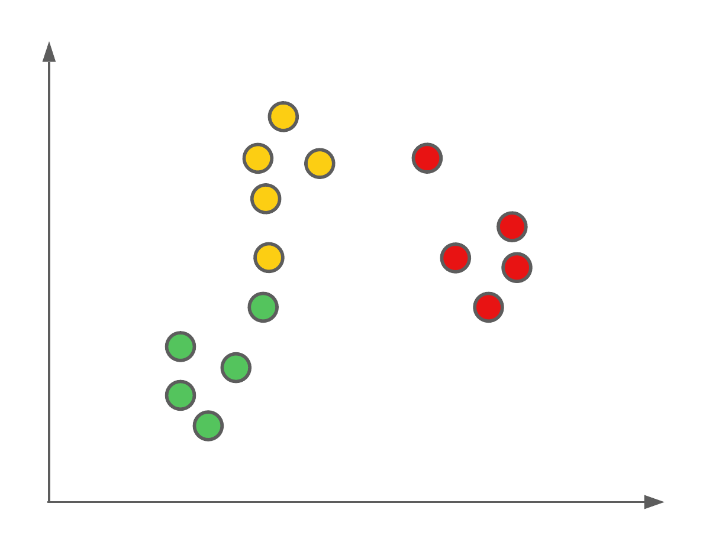
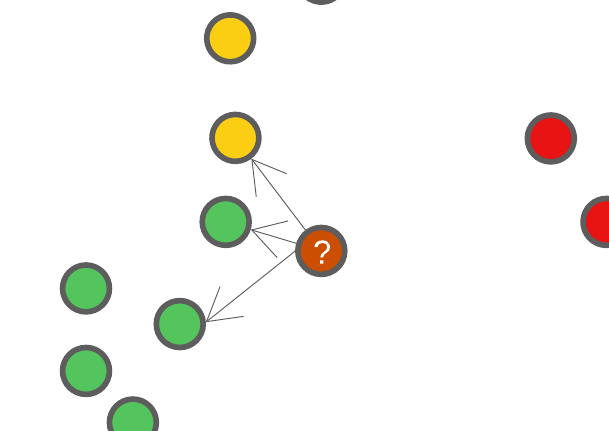
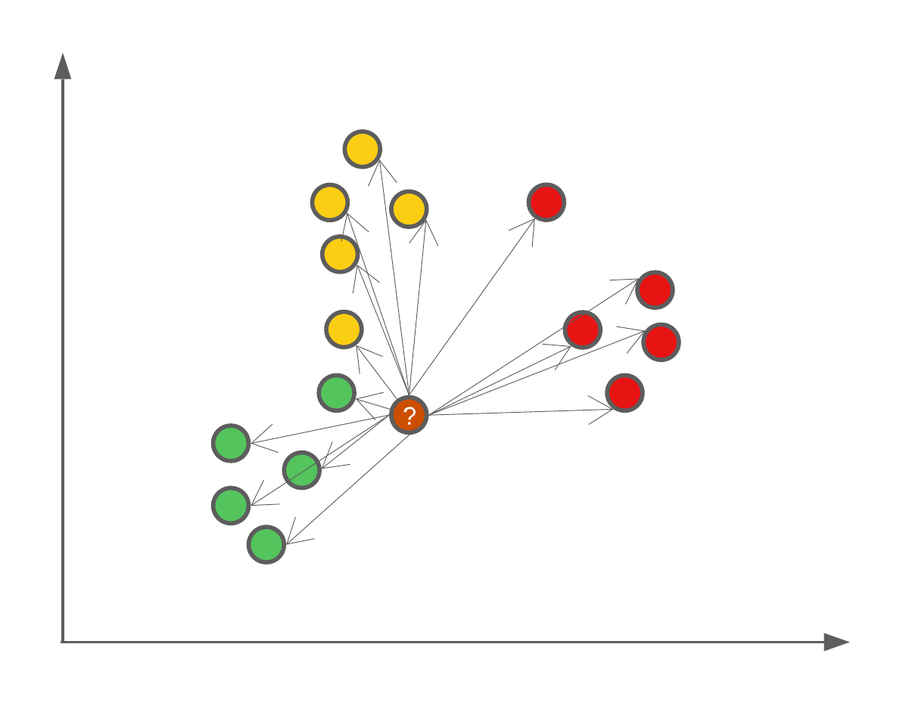
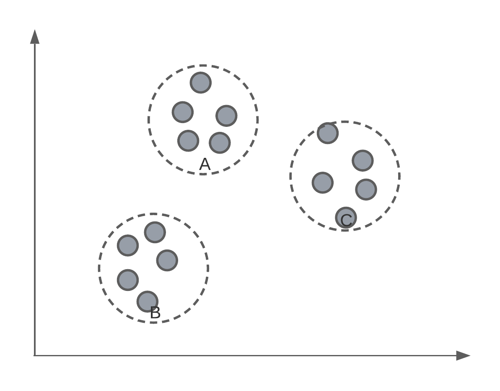
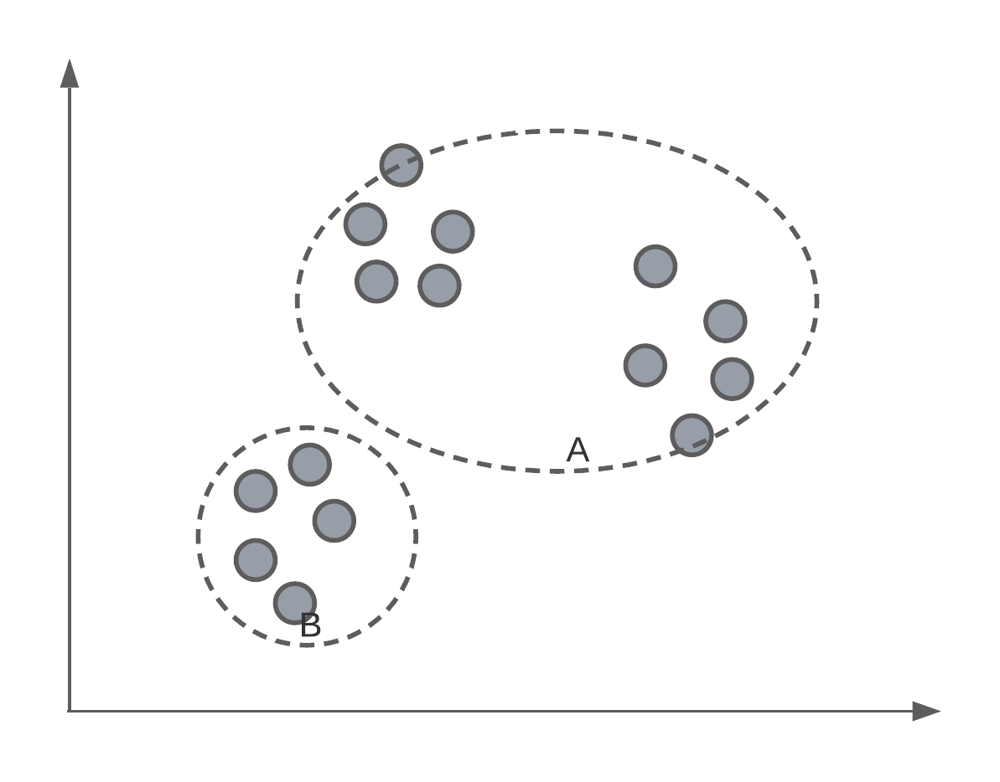

K-Nearest Neighbour & K-Means
Lecture 5
kNN Introduction
Problem statement
The first algorithm we’re going to see today is a very simple one. Let’s image we have a feature space with labelled data points, such as this:

We want to use these labelled data points as our training data to be able to predict the classification of new data points (such as those from our testing set).
The algorithm we’re going to use to do this classification is called K-nearest neighbour, or kNN for short. This algorithm isn’t mathematically derived as some others we’ve seen, but rather based on intuition.
Example solution
kNN is a classification algorithm where, we as the user, get to set \(K\) ourselves. \(K\) is the number of neighbours that will be considered for the model’s classification.
Neighbour’s of a new data point can be determined using the euclidean distance, and selecting \(K\) closest points.

Let’s say we set \(K=3\), this means that when we have a new data point we want to classify, we’re going to find out where this new data point falls in the feature space, and find 3 of it’s closest neighbours. Using these closet neighbours, we will assign this new data point the same class as the class majority of it’s neighbours.
The effect of \(K\)
\(K\) in the kNN algorithm is user defined, and the larger the number, the more neighbours will be used. One fun example of the effect of \(K\) is that if we were to set \(K=N\) where \(N\) is the number of data points in our training set, then we will always assign new data points the majority class.

Accounting for ‘ties’/‘draws’
What if, when using \(K=4\), two neighbours are of class 1, while the other two neighbours are of class 2. Which class is assigned to our new data point? Well, since the k-NN algorithm is not a mathematically derived algorithm, but based on the intuition that with similar coordinates in a feature space should be similar classes, then it’s up to you to decide how to deal with ‘ties’. One example, would be to avoid them all together and only use an odd \(K\). Another option would be to weight the neighbours by the distance to the new point to be classified. So that closer points have a higher weight. In summary here are some options:
- Only use odd valued \(K\).
- Decrease \(K\) until the tie is broken.
- Weight neighbours by the distance.
K-Means Introduction
Problem statement
Say we had a set of data, un-labelled data, and we wanted to separate them into groups or classes. Below we have an example where, as humans, we can see 3 distinct groups of data points. In today’s lecture, we’re going to look at an algorithm that can identify these same clusters or groups systematically.

K-Means clustering
This algorithm is called K-means. In essence, it is an algorithm that finds \(K\) different clusters or groups of points, where \(K\) is defined by the user.

Of course, we have to, ourselves, pick a value of for \(K\). For data that has more than 3-dimensions, we might not know how many groups there are inherently in the data.

Starting point
K-means is an iterative algorithm, which means that the centroids of the clusters will be randomly assigned in the feature space. Let’s say that we initialise a K-means algorithm with \(K = 3\). We might have something that looks like:

Iterative process
As mentioned, K-means is an iterative process of assigning the position of the cluster’s centroid. Therefore, after randomly assigning each centroid to a different point in the feature space, the algorithm will iteratively move the centroid to better match the true clustering of data points. We’ll get back to how this is mathematically done later in the lecture, but for now we want to understand this intuition.

Assigning centroids
After the algorithm has converged or stopped, we will have 3 centroids, that will, hopefully, match the true clustering of data points.
After we have these positioned centroids, they can be used to label new data points by determining to which cluster do the new data points fall under, or are closet to.

K-Means Algorithm Detail
Initialisation
Let \(C\) be the set of cluster centroids:
\[C = \{c_1, c_2, ..., c_K\}\]
And let \(S(c_i)\) be the set of all points \(x_i\) that are located within the cluster \(c_i\). The intersection of all \(S\) will be the null set (each point will be assigned to only one cluster):
\[ \bigcap_{i=1}^{K} S(c_i) = \emptyset \]
To initialise the K-means algorithm, we randomly select \(K\) data points as the location of the centroids, i.e. \(x_i = c_i\).
After, we compute \(S(c_i)\) by the minimum euclidean distance to each centroid. I.e., to determine whether a new point falls within the cluster of \(c_i\), we can use the euclidean distance between \(x_i\) and \(c_i\):
\[ \arg \min_{c_i \in C} || x_i - c_i ||^2 \]
So we select the cluster to which our new \(x_i\) data point is closest to.
The position of each centroid \(c_i\) is the geometric mean of the data points contained within the cluster:
\[ c_i = \frac{1}{|S(c_i)|} \sum_{x_j \in S(c_i)} x_j \]
Iteration
Classic optimisation problem:
\[ \arg \min_c \sum_{c_i \in C} \sum_{x_j \in S(c_i)} || x_j - c_i ||^2 \]
There are 3 criterions for stopping the iterative process:
- There are no more changes in clusters by moving the centroids.
- Points remain within the same cluster as before.
- A maximum number of steps/iterations has been reached.
Classification
To determine whether a new point falls within the cluster of \(c_i\), we can use the euclidean distance between \(x_i\) and \(c_i\):
\[ \arg \min_{c_i \in C} || x_i - c_i ||^2 \]
So we select the cluster to which our new \(x_i\) data point is closest to.
Evaluation of K-means
Since we don’t have true labels with which to evaluate the k-means algorithm against, we must take a different tactic for evaluating the classifications or group of points it has clustered together. This works by evaluating the structure of the clusters.
intra-cluster distance – the average distance between all data points in the same cluster.

intra-cluster diameter – the distance between the two most remote objects in a cluster.

Inter-cluster distance

inter-cluster distance – average smallest distance to a different cluster.
silhouette score – \(\frac{\text{intra} - \text{inter}}{\max(\text{intra}, \text{inter})}\)
The effect of \(K\)
The \(K\) in k-means clustering determines how many clusters the algorithm will try to find. But if our data is un-labelled, how do we know what to set \(K\) equal to? The answer is that we don’t necessarily. So we might create several different clustering algorithms where we vary the value for \(K\) and evaluate the resulting model.
This may give us some indication as to how many clusters to use.
Other times the value for \(K\) will be inherent to the problem you’re trying to solve. For example, if we’re trying to cluster and label the calls of different birds, we may know the number of different bird species that were recorded, thus providing some grounds for setting \(K\).
Summary
In today’s lecture, we’ve had a look at two different classification algorithms:
- K-Nearest Neighbour where we classify data points by looking at the existing classification of the existing \(K\) neighbours.
- K-Means where, for un-labelled data, the algorithm finds the centroid of \(K\) clusters, which we can use in future to classify new data points depending on which cluster they fall within.
For each of these algorithms, we’ve first try understand, intuitively, what the algorithm is attempting to achieve. After this point, we’ve taken a look at the mathematics behind the algorithm so that we can gain a deeper understanding and appreciation for it’s mechanics.